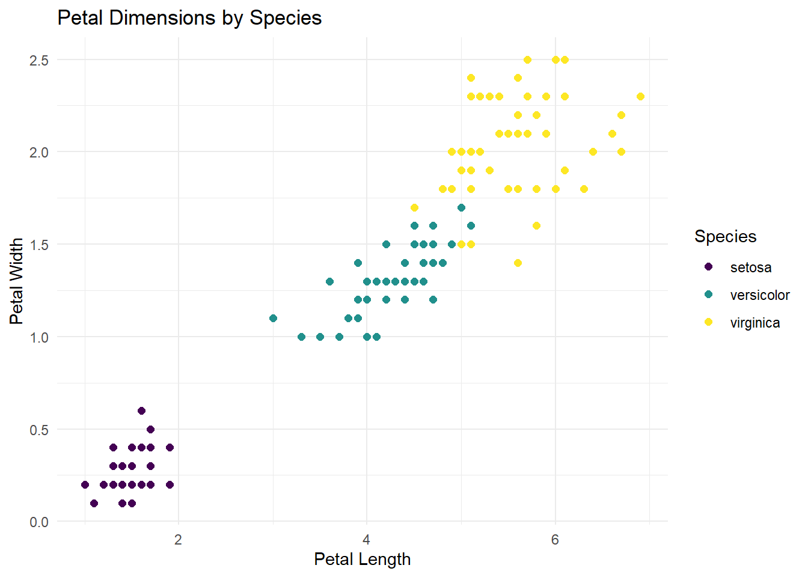
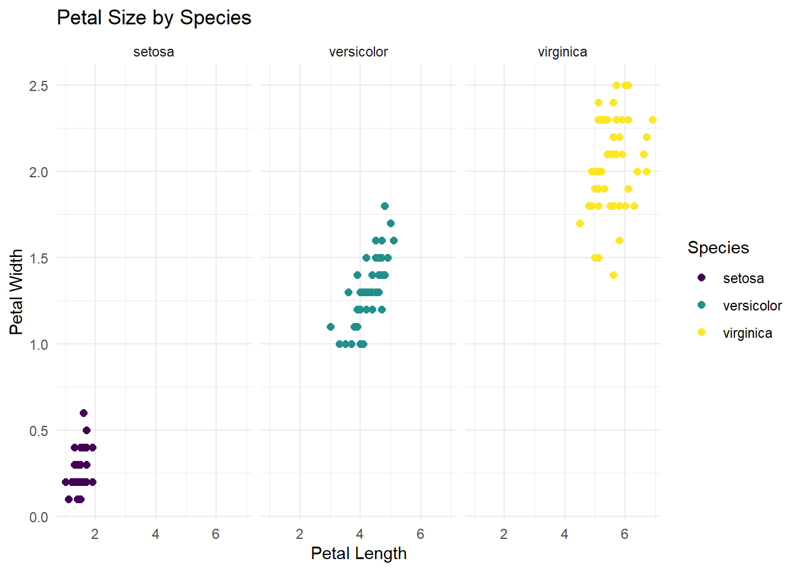
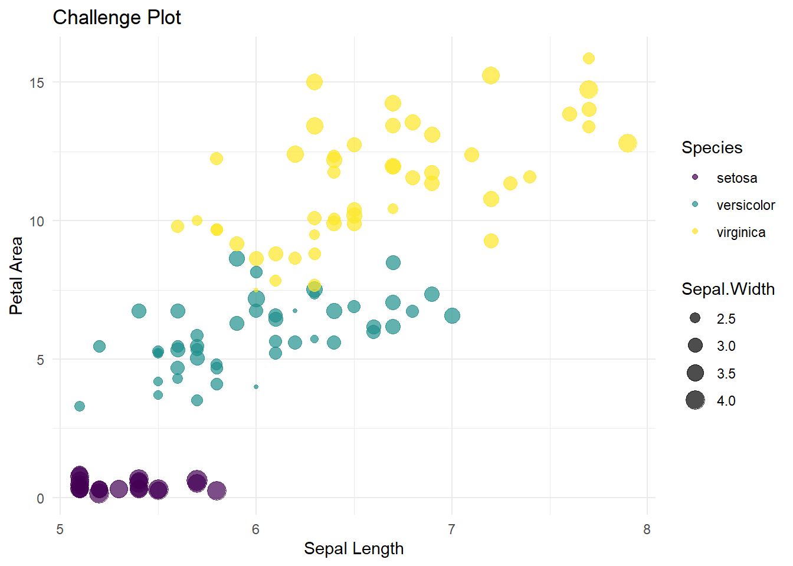

Chart Review Table
USC Biomedical Student Research Seminar
Jonathan Nelson
14 April, 2026
if (!require("dplyr")) {install.packages("dplyr"); require("dplyr")}
if (!require("Seurat")) {install.packages("Seurat"); require("Seurat")}
# if (!require("SeuratDisk")) {install.packages("SeuratDisk"); require("SeuratDisk")}
if (!require("knitr")) {install.packages("knitr"); require("knitr")}
if (!require("ggplot2")) {install.packages("ggplot2"); require("ggplot2")}
if (!requireNamespace('BiocManager', quietly = TRUE)) {install.packages('BiocManager'); require("BiocManager")}
if (!require("here")) {install.packages("here"); require("here")}
if (!require("paletteer")) {install.packages("paletteer"); require("paletteer")} # color palette
if (!require("grDevices")) {install.packages("grDevices"); require("grDevices")} # for grDevices palette
if (!require("tidyverse")) {install.packages("tidyverse"); require("tidyverse")} # for data frame transformation
if (!require("tibble")) {install.packages("tibble"); require("tibble")} # for table transformation
#if (!require("geneName")) {install.packages("geneName"); require("geneName")}
if (!require("ggrepel")) {install.packages("ggrepel"); require("ggrepel")}
if (!require("gghighlight")) {install.packages("gghighlight"); require("gghighlight")}
if (!require("ggpmisc")) {install.packages("ggpmisc"); require("ggpmisc")}
if (!require("ggupset")) {install.packages("ggupset"); require("ggupset")}
if (!require("RColorBrewer")) {install.packages("RColorBrewer"); require("RColorBrewer")}
if (!require("viridis")) {install.packages("viridis"); require("viridis")}
if (!require("qs")) {install.packages("qs"); require("qs")}
if (!require("arrow")) {install.packages("arrow"); require("arrow")}
#setRepositories(ind = 1:3, addURLs = c('https://satijalab.r-universe.dev', 'https://bnprks.r-universe.dev/'))
#install.packages(c("BPCells", "presto", "glmGamPoi"))
#library(SeuratData)
library(openxlsx)
library(gplots)
library(ggvenn)
library(BPCells)
library(presto)
library(glmGamPoi)
library(readxl)
options(future.globals.maxSize = 64 * 1024^3) # 55 GB
getOption("future.globals.maxSize") #59055800320## [1] 687194767361 Introduction
This code was generated for the 2026 Biomedical Research Seminar at the University of Southern California by Jonathan Nelson. It creates a descriptive summary table comparing patient, perioperative, pathologic, and postoperative outcomes between surgical approaches, and includes p-values and statistical test labels for each comparison.
The analysis uses a de-identified dataset provided by Sammie Rosen. The dataset includes demographic, clinical, operative, histologic, and follow-up variables collected for patients undergoing extraperitoneal versus transvesical simple prostatectomy.
1.1 Download the files for this tutorial
1.2 Read in the dataset
1.3 Name and Factor Table
df <- read_excel("MASTER EP vs TV simples - deidentified.xlsx", sheet = "Sheet1") %>%
mutate(
approach = factor(
`Surgical Approach (1=EP or 2=TV)`,
levels = c(1, 2),
labels = c("Extraperitoneal", "Transvesical")
),
`HTN status (0=No or 1=Yes)` = factor(`HTN status (0=No or 1=Yes)`, levels = c(0, 1), labels = c("No", "Yes")),
`DM2 status (0=No or 1=Yes)` = factor(`DM2 status (0=No or 1=Yes)`, levels = c(0, 1), labels = c("No", "Yes")),
`HLD (0=No or 1=Yes)` = factor(`HLD (0=No or 1=Yes)`, levels = c(0, 1), labels = c("No", "Yes")),
`prior Inguinal Hernia/pelvic surgery (0=No or 1=Yes)` = factor(`prior Inguinal Hernia/pelvic surgery (0=No or 1=Yes)`, levels = c(0, 1), labels = c("No", "Yes")),
`Prior Abdominal Surgery (0=No or 1=Yes)` = factor(`Prior Abdominal Surgery (0=No or 1=Yes)`, levels = c(0, 1), labels = c("No", "Yes")),
`Pre-Op Biopsy Done (0=No 1=Yes)` = factor(`Pre-Op Biopsy Done (0=No 1=Yes)`, levels = c(0, 1), labels = c("No", "Yes")),
`Pre-Op Biopsy Result (0=Neg 1=Pos)` = factor(`Pre-Op Biopsy Result (0=Neg 1=Pos)`, levels = c(0, 1), labels = c("Negative", "Positive")),
`Pre-Op Foley Present (0=No 1=Yes)` = factor(`Pre-Op Foley Present (0=No 1=Yes)`, levels = c(0, 1), labels = c("No", "Yes")),
`Lymph Node Dissection (0=No or 1=Yes)` = factor(`Lymph Node Dissection (0=No or 1=Yes)`, levels = c(0, 1), labels = c("No", "Yes")),
`Conversion (0=No or 1=Yes)` = factor(`Conversion (0=No or 1=Yes)`, levels = c(0, 1), labels = c("No", "Yes")),
`Drain placement (0=No or 1=Yes)` = factor(`Drain placement (0=No or 1=Yes)`, levels = c(0, 1), labels = c("No", "Yes")),
`pRBCs given (0=No 1=Yes)` = factor(`pRBCs given (0=No 1=Yes)`, levels = c(0, 1), labels = c("No", "Yes")),
`LOS (0=Same Day 1=Inpatient)` = factor(`LOS (0=Same Day 1=Inpatient)`, levels = c(0, 1), labels = c("Same Day", "Inpatient")),
`Narcotics (PO day 0-1) (0 = no, 1 = yes)` = factor(`Narcotics (PO day 0-1) (0 = no, 1 = yes)`, levels = c(0, 1), labels = c("No", "Yes")),
`30-Day Readmission (0=No or 1=Yes)` = factor(`30-Day Readmission (0=No or 1=Yes)`, levels = c(0, 1), labels = c("No", "Yes")),
`Early Continence at 6 Weeks (0=No or 1=Yes) continent = no pads or 1 protection pad` =
factor(`Early Continence at 6 Weeks (0=No or 1=Yes) continent = no pads or 1 protection pad`,
levels = c(0, 1), labels = c("No", "Yes")),
`Continence 3 Months (0=No or 1=Yes)` = factor(`Continence 3 Months (0=No or 1=Yes)`, levels = c(0, 1), labels = c("No", "Yes")),
`30 day Complications (0=no 1=Yes)` = factor(`30 day Complications (0=no 1=Yes)`, levels = c(0, 1), labels = c("No", "Yes")),
`ASA (1-5)` = factor(`ASA (1-5)`)
)
df 1.4 Let’s Look at One of the Variables
1.4.1 Age at time of Surgery
## [1] 72 73 61 83 63 69 67 75 72 73 76 71 74 84 62 70 64 67 88 75 82 79 76 67 74
## [26] 59 71 74 80 74 76 72 65 62 74 76 80 72 78 81 65 68 68 77 85 80 70 75 67 72
## [51] 71 75 64 58 74 64 66 581.4.1.1 Calculate the Statistic
df %>%
group_by(approach) %>%
summarise(
mean_age = mean(`Age (at time of surgery)`, na.rm = TRUE),
sd_age = sd(`Age (at time of surgery)`, na.rm = TRUE),
.groups = "drop"
)##
## Wilcoxon rank sum test with continuity correction
##
## data: Age (at time of surgery) by approach
## W = 441.5, p-value = 0.654
## alternative hypothesis: true location shift is not equal to 01.4.1.2 Putting It Into a Table
library(dplyr)
library(gt)
# Summary stats
age_summary <- df %>%
group_by(approach) %>%
summarise(
mean = mean(`Age (at time of surgery)`, na.rm = TRUE),
sd = sd(`Age (at time of surgery)`, na.rm = TRUE),
.groups = "drop"
)
# Format into one row
age_tbl <- tibble(
Variable = "Age (yr)",
Extraperitoneal = sprintf("%.1f (%.1f)",
age_summary$mean[age_summary$approach == "Extraperitoneal"],
age_summary$sd[age_summary$approach == "Extraperitoneal"]),
Transvesical = sprintf("%.1f (%.1f)",
age_summary$mean[age_summary$approach == "Transvesical"],
age_summary$sd[age_summary$approach == "Transvesical"]),
`P-value` = formatC(
wilcox.test(`Age (at time of surgery)` ~ approach, data = df)$p.value,
format = "f", digits = 3
),
Test = "Wilcoxon rank-sum"
)
age_tbl %>%
gt()| Variable | Extraperitoneal | Transvesical | P-value | Test |
|---|---|---|---|---|
| Age (yr) | 72.4 (6.8) | 71.2 (7.2) | 0.654 | Wilcoxon rank-sum |
1.4.2 Age at time of Surgery
## [1] 72 73 61 83 63 69 67 75 72 73 76 71 74 84 62 70 64 67 88 75 82 79 76 67 74
## [26] 59 71 74 80 74 76 72 65 62 74 76 80 72 78 81 65 68 68 77 85 80 70 75 67 72
## [51] 71 75 64 58 74 64 66 581.4.2.1 Calculate the Statistic
df %>%
group_by(approach) %>%
summarise(
mean_age = mean(`Age (at time of surgery)`, na.rm = TRUE),
sd_age = sd(`Age (at time of surgery)`, na.rm = TRUE),
.groups = "drop"
)##
## Wilcoxon rank sum test with continuity correction
##
## data: Age (at time of surgery) by approach
## W = 441.5, p-value = 0.654
## alternative hypothesis: true location shift is not equal to 01.4.2.2 Putting It Into a Table
library(dplyr)
library(gt)
# Summary stats
age_summary <- df %>%
group_by(approach) %>%
summarise(
mean = mean(`Age (at time of surgery)`, na.rm = TRUE),
sd = sd(`Age (at time of surgery)`, na.rm = TRUE),
.groups = "drop"
)
# Format into one row
age_tbl <- tibble(
Variable = "Age (yr)",
Extraperitoneal = sprintf("%.1f (%.1f)",
age_summary$mean[age_summary$approach == "Extraperitoneal"],
age_summary$sd[age_summary$approach == "Extraperitoneal"]),
Transvesical = sprintf("%.1f (%.1f)",
age_summary$mean[age_summary$approach == "Transvesical"],
age_summary$sd[age_summary$approach == "Transvesical"]),
`P-value` = formatC(
wilcox.test(`Age (at time of surgery)` ~ approach, data = df)$p.value,
format = "f", digits = 3
),
Test = "Wilcoxon rank-sum"
)
age_tbl %>%
gt()| Variable | Extraperitoneal | Transvesical | P-value | Test |
|---|---|---|---|---|
| Age (yr) | 72.4 (6.8) | 71.2 (7.2) | 0.654 | Wilcoxon rank-sum |
1.5 Working Table
library(readxl)
library(dplyr)
library(purrr)
library(tibble)
library(gtsummary)
library(gt)
df <- read_excel("MASTER EP vs TV simples - deidentified.xlsx", sheet = "Sheet1") %>%
mutate(
approach = factor(
`Surgical Approach (1=EP or 2=TV)`,
levels = c(1, 2),
labels = c("Extraperitoneal", "Transvesical")
),
`HTN status (0=No or 1=Yes)` = factor(`HTN status (0=No or 1=Yes)`, levels = c(0, 1), labels = c("No", "Yes")),
`DM2 status (0=No or 1=Yes)` = factor(`DM2 status (0=No or 1=Yes)`, levels = c(0, 1), labels = c("No", "Yes")),
`HLD (0=No or 1=Yes)` = factor(`HLD (0=No or 1=Yes)`, levels = c(0, 1), labels = c("No", "Yes")),
`prior Inguinal Hernia/pelvic surgery (0=No or 1=Yes)` = factor(`prior Inguinal Hernia/pelvic surgery (0=No or 1=Yes)`, levels = c(0, 1), labels = c("No", "Yes")),
`Prior Abdominal Surgery (0=No or 1=Yes)` = factor(`Prior Abdominal Surgery (0=No or 1=Yes)`, levels = c(0, 1), labels = c("No", "Yes")),
`Pre-Op Biopsy Done (0=No 1=Yes)` = factor(`Pre-Op Biopsy Done (0=No 1=Yes)`, levels = c(0, 1), labels = c("No", "Yes")),
`Pre-Op Biopsy Result (0=Neg 1=Pos)` = factor(`Pre-Op Biopsy Result (0=Neg 1=Pos)`, levels = c(0, 1), labels = c("Negative", "Positive")),
`Pre-Op Foley Present (0=No 1=Yes)` = factor(`Pre-Op Foley Present (0=No 1=Yes)`, levels = c(0, 1), labels = c("No", "Yes")),
`Lymph Node Dissection (0=No or 1=Yes)` = factor(`Lymph Node Dissection (0=No or 1=Yes)`, levels = c(0, 1), labels = c("No", "Yes")),
`Conversion (0=No or 1=Yes)` = factor(`Conversion (0=No or 1=Yes)`, levels = c(0, 1), labels = c("No", "Yes")),
`Drain placement (0=No or 1=Yes)` = factor(`Drain placement (0=No or 1=Yes)`, levels = c(0, 1), labels = c("No", "Yes")),
`pRBCs given (0=No 1=Yes)` = factor(`pRBCs given (0=No 1=Yes)`, levels = c(0, 1), labels = c("No", "Yes")),
`LOS (0=Same Day 1=Inpatient)` = factor(`LOS (0=Same Day 1=Inpatient)`, levels = c(0, 1), labels = c("Same Day", "Inpatient")),
`Narcotics (PO day 0-1) (0 = no, 1 = yes)` = factor(`Narcotics (PO day 0-1) (0 = no, 1 = yes)`, levels = c(0, 1), labels = c("No", "Yes")),
`30-Day Readmission (0=No or 1=Yes)` = factor(`30-Day Readmission (0=No or 1=Yes)`, levels = c(0, 1), labels = c("No", "Yes")),
`Early Continence at 6 Weeks (0=No or 1=Yes) continent = no pads or 1 protection pad` =
factor(`Early Continence at 6 Weeks (0=No or 1=Yes) continent = no pads or 1 protection pad`,
levels = c(0, 1), labels = c("No", "Yes")),
`Continence 3 Months (0=No or 1=Yes)` = factor(`Continence 3 Months (0=No or 1=Yes)`, levels = c(0, 1), labels = c("No", "Yes")),
`30 day Complications (0=no 1=Yes)` = factor(`30 day Complications (0=no 1=Yes)`, levels = c(0, 1), labels = c("No", "Yes")),
`ASA (1-5)` = factor(`ASA (1-5)`)
)
baseline_labels <- list(
`Age (at time of surgery)` ~ "Age (yr)",
BMI ~ "BMI (kg/m^2)",
CCI ~ "CCI",
`ASA (1-5)` ~ "ASA physical status grading",
`HTN status (0=No or 1=Yes)` ~ "History of hypertension",
`DM2 status (0=No or 1=Yes)` ~ "History of type 2 diabetes mellitus",
`HLD (0=No or 1=Yes)` ~ "History of hyperlipidemia",
`prior Inguinal Hernia/pelvic surgery (0=No or 1=Yes)` ~ "History of prior inguinal/pelvic surgery",
`Prior Abdominal Surgery (0=No or 1=Yes)` ~ "History of prior abdominal surgery",
`Pre-op Hgb` ~ "Pre-op Hgb",
`Pre-op PSA` ~ "Pre-op PSA (ng/mL)",
`Pre-op Prostate Volume (g)` ~ "Prostate volume (ml)"
)
preop_labels <- list(
`SHIM Score (pre-op)` ~ "SHIM",
`IPSS (pre-op)` ~ "IPSS",
`QOL (pre-op)` ~ "QoL",
`Pre-Op Biopsy Done (0=No 1=Yes)` ~ "Biopsy done",
`Pre-Op Biopsy Result (0=Neg 1=Pos)` ~ "Malignancy on biopsy",
`Pre-Op Foley Present (0=No 1=Yes)` ~ "Pre-op foley placed"
)
intraop_labels <- list(
`Console Time (minutes)` ~ "Console time (minutes)",
`Operative Time (minutes)` ~ "Operative time (minutes)",
`EBL (cc)` ~ "Estimated blood loss (mL)",
`Conversion (0=No or 1=Yes)` ~ "Conversion to multiport",
`Lymph Node Dissection (0=No or 1=Yes)` ~ "Lymph node dissection",
`Drain placement (0=No or 1=Yes)` ~ "Drain placement",
`pRBCs given (0=No 1=Yes)` ~ "Blood units given",
`delta Hgb` ~ "dHgb (%)"
)
histology_labels <- list(
`Specimen Weight (g)` ~ "Specimen weight (g)",
`Specimen weight/pre-op estmated weight` ~ "Specimen wt/pre-op estimated wt",
`Pathologic Diagnosis (incidental malignancy) 0= benign 1= malignant` ~ "Incidental malignancy finding"
)
postop_care_labels <- list(
`LOS (0=Same Day 1=Inpatient)` ~ "Length of stay <24 hours",
`LOS (hours) (look at note times)` ~ "Average length of stay (hours)",
`Narcotics (PO day 0-1) (0 = no, 1 = yes)` ~ "Narcotics use post-op day 0-1",
`Postop Pain Score (PACU)` ~ "Post Op Pain Score",
`Foley Duration (Days post-op)` ~ "Foley catheter duration (days)"
)
outcome_labels <- list(
`30 day Complications (0=no 1=Yes)` ~ "30 day postoperative complications (Clavien >=2 only)",
`30-Day Readmission (0=No or 1=Yes)` ~ "30 day readmission",
`Post-op PVR` ~ "Post-op PVR",
`Early Continence at 6 Weeks (0=No or 1=Yes) continent = no pads or 1 protection pad` ~ "Early Continence at 4 weeks",
`Continence 3 Months (0=No or 1=Yes)` ~ "Continence at 3 months"
)
format_p <- function(x) {
dplyr::case_when(
is.na(x) ~ NA_character_,
x < 0.001 ~ "<0.001",
TRUE ~ formatC(x, format = "f", digits = 3)
)
}
safe_pvalue <- function(data, group_var, var, continuous = FALSE) {
x <- data[[var]]
g <- data[[group_var]]
keep <- complete.cases(x, g)
x <- x[keep]
g <- g[keep]
if (length(unique(g)) < 2) return(NA_real_)
tryCatch({
if (continuous) {
wilcox.test(x ~ g)$p.value
} else {
tab <- table(x, g)
if (any(dim(tab) < 2)) return(NA_real_)
if (all(dim(tab) == c(2, 2))) {
fisher.test(tab)$p.value
} else {
suppressWarnings(chisq.test(tab, correct = FALSE)$p.value)
}
}
}, error = function(e) NA_real_)
}
calc_manual_pvals <- function(data, group_var, vars, continuous_vars) {
map_dfr(vars, function(v) {
tibble(
variable = v,
manual_p = safe_pvalue(data, group_var, v, continuous = v %in% continuous_vars)
)
})
}
attach_manual_pvals <- function(tbl, pvals) {
tbl %>%
modify_table_body(
~ .x %>%
left_join(pvals, by = "variable") %>%
mutate(
p.value = if_else(
row_type == "label",
format_p(manual_p),
NA_character_
)
) %>%
select(-manual_p)
) %>%
modify_header(p.value ~ "**P-value**") %>%
modify_column_unhide(p.value)
}
make_tbl <- function(data, vars, labels, statistic, continuous_vars) {
pvals <- calc_manual_pvals(data, "approach", vars, continuous_vars)
data %>%
select(approach, all_of(vars)) %>%
tbl_summary(
by = approach,
label = labels,
statistic = statistic,
digits = all_continuous() ~ 1,
missing = "ifany"
) %>%
attach_manual_pvals(pvals)
}
baseline_vars <- c(
"Age (at time of surgery)", "BMI", "CCI", "ASA (1-5)",
"HTN status (0=No or 1=Yes)", "DM2 status (0=No or 1=Yes)", "HLD (0=No or 1=Yes)",
"prior Inguinal Hernia/pelvic surgery (0=No or 1=Yes)",
"Prior Abdominal Surgery (0=No or 1=Yes)",
"Pre-op Hgb", "Pre-op PSA", "Pre-op Prostate Volume (g)"
)
baseline_cont <- c(
"Age (at time of surgery)", "BMI", "CCI",
"Pre-op Hgb", "Pre-op PSA", "Pre-op Prostate Volume (g)"
)
preop_vars <- c(
"SHIM Score (pre-op)", "IPSS (pre-op)", "QOL (pre-op)",
"Pre-Op Biopsy Done (0=No 1=Yes)",
"Pre-Op Biopsy Result (0=Neg 1=Pos)",
"Pre-Op Foley Present (0=No 1=Yes)"
)
preop_cont <- c("SHIM Score (pre-op)", "IPSS (pre-op)", "QOL (pre-op)")
intraop_vars <- c(
"Console Time (minutes)", "Operative Time (minutes)", "EBL (cc)",
"Conversion (0=No or 1=Yes)",
"Lymph Node Dissection (0=No or 1=Yes)",
"Drain placement (0=No or 1=Yes)",
"pRBCs given (0=No 1=Yes)",
"delta Hgb"
)
intraop_cont <- c("Console Time (minutes)", "Operative Time (minutes)", "EBL (cc)", "delta Hgb")
histology_vars <- c(
"Specimen Weight (g)",
"Specimen weight/pre-op estmated weight",
"Pathologic Diagnosis (incidental malignancy) 0= benign 1= malignant"
)
histology_cont <- c("Specimen Weight (g)", "Specimen weight/pre-op estmated weight")
postop_care_vars <- c(
"LOS (0=Same Day 1=Inpatient)",
"LOS (hours) (look at note times)",
"Narcotics (PO day 0-1) (0 = no, 1 = yes)",
"Postop Pain Score (PACU)",
"Foley Duration (Days post-op)"
)
postop_care_cont <- c("LOS (hours) (look at note times)", "Postop Pain Score (PACU)", "Foley Duration (Days post-op)")
outcome_vars <- c(
"30 day Complications (0=no 1=Yes)",
"30-Day Readmission (0=No or 1=Yes)",
"Post-op PVR",
"Early Continence at 6 Weeks (0=No or 1=Yes) continent = no pads or 1 protection pad",
"Continence 3 Months (0=No or 1=Yes)"
)
outcome_cont <- c("Post-op PVR")
baseline_tbl <- make_tbl(
df,
vars = baseline_vars,
labels = baseline_labels,
statistic = list(
all_continuous() ~ "{mean} ({sd})",
`ASA (1-5)` ~ "{n} ({p}%)",
all_categorical() ~ "{n} ({p}%)"
),
continuous_vars = baseline_cont
)
preop_tbl <- make_tbl(
df,
vars = preop_vars,
labels = preop_labels,
statistic = list(
c(`SHIM Score (pre-op)`, `IPSS (pre-op)`, `QOL (pre-op)`) ~ "{median} ({p25}, {p75})",
all_categorical() ~ "{n} ({p}%)"
),
continuous_vars = preop_cont
)
intraop_tbl <- make_tbl(
df,
vars = intraop_vars,
labels = intraop_labels,
statistic = list(
all_continuous() ~ "{mean} ({sd})",
all_categorical() ~ "{n} ({p}%)"
),
continuous_vars = intraop_cont
)
histology_tbl <- make_tbl(
df,
vars = histology_vars,
labels = histology_labels,
statistic = list(
all_continuous() ~ "{mean} ({sd})",
all_categorical() ~ "{n} ({p}%)"
),
continuous_vars = histology_cont
)
postop_care_tbl <- make_tbl(
df,
vars = postop_care_vars,
labels = postop_care_labels,
statistic = list(
`LOS (hours) (look at note times)` ~ "{mean} ({sd})",
`Postop Pain Score (PACU)` ~ "{mean} ({sd})",
`Foley Duration (Days post-op)` ~ "{median} ({p25}, {p75})",
all_categorical() ~ "{n} ({p}%)"
),
continuous_vars = postop_care_cont
)
outcomes_tbl <- make_tbl(
df,
vars = outcome_vars,
labels = outcome_labels,
statistic = list(
`Post-op PVR` ~ "{median} ({p25}, {p75})",
all_categorical() ~ "{n} ({p}%)"
),
continuous_vars = outcome_cont
)
final_tbl <- tbl_stack(
tbls = list(
baseline_tbl,
preop_tbl,
intraop_tbl,
histology_tbl,
postop_care_tbl,
outcomes_tbl
),
group_header = c(
"Baseline characteristics",
"Pre-operative variables",
"Intraoperative parameters",
"Histopathology",
"Postoperative care",
"Postoperative outcomes"
)
) %>%
modify_column_unhide(p.value) %>%
bold_labels()
final_tbl| Characteristic | Extraperitoneal N = 331 |
Transvesical N = 251 |
P-value |
|---|---|---|---|
| Baseline characteristics | |||
| Age (yr) | 72.4 (6.8) | 71.2 (7.2) | 0.654 |
| BMI (kg/m^2) | 27.6 (5.2) | 26.9 (4.6) | 0.668 |
| Unknown | 2 | 0 | |
| CCI | 0.452 | ||
| 1 | 1 (3.1%) | 2 (8.0%) | |
| 2 | 6 (19%) | 6 (24%) | |
| 3 | 16 (50%) | 12 (48%) | |
| 4 | 9 (28%) | 2 (8.0%) | |
| 5 | 0 (0%) | 2 (8.0%) | |
| 6 | 0 (0%) | 1 (4.0%) | |
| Unknown | 1 | 0 | |
| ASA physical status grading | 0.457 | ||
| 2 | 17 (55%) | 17 (68%) | |
| 3 | 13 (42%) | 8 (32%) | |
| 4 | 1 (3.2%) | 0 (0%) | |
| Unknown | 2 | 0 | |
| History of hypertension | 21 (64%) | 11 (44%) | 0.185 |
| History of type 2 diabetes mellitus | 6 (18%) | 4 (16%) | 1.000 |
| History of hyperlipidemia | 22 (67%) | 13 (52%) | 0.290 |
| History of prior inguinal/pelvic surgery | 5 (15%) | 4 (16%) | 1.000 |
| History of prior abdominal surgery | 16 (48%) | 2 (8.0%) | 0.001 |
| Pre-op Hgb | 13.6 (1.4) | 12.9 (1.5) | 0.097 |
| Unknown | 7 | 0 | |
| Pre-op PSA (ng/mL) | 7.4 (7.9) | 6.5 (5.1) | 1.000 |
| Unknown | 8 | 8 | |
| Prostate volume (ml) | 125.2 (49.4) | 120.3 (37.4) | 0.975 |
| Pre-operative variables | |||
| SHIM | 12.0 (3.0, 16.0) | 15.0 (7.5, 19.5) | 0.384 |
| Unknown | 8 | 9 | |
| IPSS | 20.0 (12.0, 25.0) | 19.0 (15.0, 24.0) | 0.811 |
| Unknown | 4 | 8 | |
| QoL | 0.307 | ||
| 1 | 2 (13%) | 1 (6.3%) | |
| 2 | 1 (6.3%) | 2 (13%) | |
| 3 | 3 (19%) | 4 (25%) | |
| 4 | 2 (13%) | 6 (38%) | |
| 5 | 2 (13%) | 1 (6.3%) | |
| 6 | 6 (38%) | 2 (13%) | |
| Unknown | 17 | 9 | |
| Biopsy done | 6 (18%) | 6 (24%) | 0.745 |
| Malignancy on biopsy | 1.000 | ||
| Negative | 6 (100%) | 6 (86%) | |
| Positive | 0 (0%) | 1 (14%) | |
| Unknown | 27 | 18 | |
| Pre-op foley placed | 13 (39%) | 14 (56%) | 0.289 |
| Intraoperative parameters | |||
| Console time (minutes) | 146.1 (55.2) | 138.1 (51.4) | 0.701 |
| Unknown | 18 | 5 | |
| Operative time (minutes) | 181.2 (57.3) | 190.6 (45.2) | 0.192 |
| Unknown | 14 | 0 | |
| Estimated blood loss (mL) | 0.027 | ||
| 25 | 1 (3.1%) | 0 (0%) | |
| 50 | 10 (31%) | 4 (16%) | |
| 75 | 5 (16%) | 1 (4.0%) | |
| 100 | 9 (28%) | 7 (28%) | |
| 125 | 1 (3.1%) | 2 (8.0%) | |
| 150 | 2 (6.3%) | 7 (28%) | |
| 200 | 1 (3.1%) | 4 (16%) | |
| 300 | 2 (6.3%) | 0 (0%) | |
| 500 | 1 (3.1%) | 0 (0%) | |
| Unknown | 1 | 0 | |
| Conversion to multiport | 0 (0%) | 0 (0%) | 1.000 |
| Lymph node dissection | 0 (0%) | 0 (0%) | 1.000 |
| Drain placement | 1 (3.0%) | 0 (0%) | 1.000 |
| Blood units given | 0 (0%) | 0 (0%) | 1.000 |
| dHgb (%) | -0.8 (0.7) | -0.6 (1.1) | 0.612 |
| Unknown | 14 | 8 | |
| Histopathology | |||
| Specimen weight (g) | 74.7 (40.6) | 64.2 (28.8) | 0.504 |
| Unknown | 2 | 0 | |
| Specimen wt/pre-op estimated wt | 0.6 (0.1) | 0.5 (0.2) | 0.255 |
| Unknown | 2 | 0 | |
| Incidental malignancy finding | 5 (16%) | 3 (12%) | 1.000 |
| Unknown | 1 | 0 | |
| Postoperative care | |||
| Length of stay <24 hours | 0.377 | ||
| Same Day | 11 (55%) | 10 (40%) | |
| Inpatient | 9 (45%) | 15 (60%) | |
| Unknown | 13 | 0 | |
| Average length of stay (hours) | 18.4 (14.3) | 18.4 (9.7) | 0.423 |
| Unknown | 13 | 0 | |
| Narcotics use post-op day 0-1 | 1 (4.0%) | 5 (20%) | 0.189 |
| Unknown | 8 | 0 | |
| Post Op Pain Score | 0.009 | ||
| 0 | 1 (6.3%) | 8 (35%) | |
| 1 | 2 (13%) | 2 (8.7%) | |
| 2 | 1 (6.3%) | 2 (8.7%) | |
| 3 | 0 (0%) | 2 (8.7%) | |
| 4 | 3 (19%) | 2 (8.7%) | |
| 5 | 1 (6.3%) | 5 (22%) | |
| 6 | 1 (6.3%) | 1 (4.3%) | |
| 7 | 2 (13%) | 0 (0%) | |
| 8 | 5 (31%) | 1 (4.3%) | |
| Unknown | 17 | 2 | |
| Foley catheter duration (days) | 9.0 (6.0, 10.0) | 7.0 (6.0, 9.0) | 0.204 |
| Unknown | 7 | 2 | |
| Postoperative outcomes | |||
| 30 day postoperative complications (Clavien >=2 only) | 4 (15%) | 4 (17%) | 1.000 |
| Unknown | 6 | 2 | |
| 30 day readmission | 1 (4.0%) | 1 (4.2%) | 1.000 |
| Unknown | 8 | 1 | |
| Post-op PVR | 9.0 (0.0, 19.0) | 5.0 (0.0, 18.0) | 0.846 |
| Unknown | 6 | 18 | |
| Early Continence at 4 weeks | 27 (90%) | 21 (95%) | 0.629 |
| Unknown | 3 | 3 | |
| Continence at 3 months | 20 (100%) | 22 (100%) | 1.000 |
| Unknown | 13 | 3 | |
| 1 Mean (SD); n (%) | |||
1.6 Table with Stats Info
library(readxl)
library(dplyr)
library(purrr)
library(tibble)
library(gtsummary)
library(gt)
df <- read_excel("MASTER EP vs TV simples - deidentified.xlsx", sheet = "Sheet1") %>%
mutate(
approach = factor(
`Surgical Approach (1=EP or 2=TV)`,
levels = c(1, 2),
labels = c("Extraperitoneal", "Transvesical")
),
`HTN status (0=No or 1=Yes)` = factor(`HTN status (0=No or 1=Yes)`, levels = c(0, 1), labels = c("No", "Yes")),
`DM2 status (0=No or 1=Yes)` = factor(`DM2 status (0=No or 1=Yes)`, levels = c(0, 1), labels = c("No", "Yes")),
`HLD (0=No or 1=Yes)` = factor(`HLD (0=No or 1=Yes)`, levels = c(0, 1), labels = c("No", "Yes")),
`prior Inguinal Hernia/pelvic surgery (0=No or 1=Yes)` = factor(`prior Inguinal Hernia/pelvic surgery (0=No or 1=Yes)`, levels = c(0, 1), labels = c("No", "Yes")),
`Prior Abdominal Surgery (0=No or 1=Yes)` = factor(`Prior Abdominal Surgery (0=No or 1=Yes)`, levels = c(0, 1), labels = c("No", "Yes")),
`Pre-Op Biopsy Done (0=No 1=Yes)` = factor(`Pre-Op Biopsy Done (0=No 1=Yes)`, levels = c(0, 1), labels = c("No", "Yes")),
`Pre-Op Biopsy Result (0=Neg 1=Pos)` = factor(`Pre-Op Biopsy Result (0=Neg 1=Pos)`, levels = c(0, 1), labels = c("Negative", "Positive")),
`Pre-Op Foley Present (0=No 1=Yes)` = factor(`Pre-Op Foley Present (0=No 1=Yes)`, levels = c(0, 1), labels = c("No", "Yes")),
`Lymph Node Dissection (0=No or 1=Yes)` = factor(`Lymph Node Dissection (0=No or 1=Yes)`, levels = c(0, 1), labels = c("No", "Yes")),
`Conversion (0=No or 1=Yes)` = factor(`Conversion (0=No or 1=Yes)`, levels = c(0, 1), labels = c("No", "Yes")),
`Drain placement (0=No or 1=Yes)` = factor(`Drain placement (0=No or 1=Yes)`, levels = c(0, 1), labels = c("No", "Yes")),
`pRBCs given (0=No 1=Yes)` = factor(`pRBCs given (0=No 1=Yes)`, levels = c(0, 1), labels = c("No", "Yes")),
`LOS (0=Same Day 1=Inpatient)` = factor(`LOS (0=Same Day 1=Inpatient)`, levels = c(0, 1), labels = c("Same Day", "Inpatient")),
`Narcotics (PO day 0-1) (0 = no, 1 = yes)` = factor(`Narcotics (PO day 0-1) (0 = no, 1 = yes)`, levels = c(0, 1), labels = c("No", "Yes")),
`30-Day Readmission (0=No or 1=Yes)` = factor(`30-Day Readmission (0=No or 1=Yes)`, levels = c(0, 1), labels = c("No", "Yes")),
`Early Continence at 6 Weeks (0=No or 1=Yes) continent = no pads or 1 protection pad` =
factor(`Early Continence at 6 Weeks (0=No or 1=Yes) continent = no pads or 1 protection pad`,
levels = c(0, 1), labels = c("No", "Yes")),
`Continence 3 Months (0=No or 1=Yes)` = factor(`Continence 3 Months (0=No or 1=Yes)`, levels = c(0, 1), labels = c("No", "Yes")),
`30 day Complications (0=no 1=Yes)` = factor(`30 day Complications (0=no 1=Yes)`, levels = c(0, 1), labels = c("No", "Yes")),
`ASA (1-5)` = factor(`ASA (1-5)`)
)
baseline_labels <- list(
`Age (at time of surgery)` ~ "Age (yr)",
BMI ~ "BMI (kg/m^2)",
CCI ~ "CCI",
`ASA (1-5)` ~ "ASA physical status grading",
`HTN status (0=No or 1=Yes)` ~ "History of hypertension",
`DM2 status (0=No or 1=Yes)` ~ "History of type 2 diabetes mellitus",
`HLD (0=No or 1=Yes)` ~ "History of hyperlipidemia",
`prior Inguinal Hernia/pelvic surgery (0=No or 1=Yes)` ~ "History of prior inguinal/pelvic surgery",
`Prior Abdominal Surgery (0=No or 1=Yes)` ~ "History of prior abdominal surgery",
`Pre-op Hgb` ~ "Pre-op Hgb",
`Pre-op PSA` ~ "Pre-op PSA (ng/mL)",
`Pre-op Prostate Volume (g)` ~ "Prostate volume (ml)"
)
preop_labels <- list(
`SHIM Score (pre-op)` ~ "SHIM",
`IPSS (pre-op)` ~ "IPSS",
`QOL (pre-op)` ~ "QoL",
`Pre-Op Biopsy Done (0=No 1=Yes)` ~ "Biopsy done",
`Pre-Op Biopsy Result (0=Neg 1=Pos)` ~ "Malignancy on biopsy",
`Pre-Op Foley Present (0=No 1=Yes)` ~ "Pre-op foley placed"
)
intraop_labels <- list(
`Console Time (minutes)` ~ "Console time (minutes)",
`Operative Time (minutes)` ~ "Operative time (minutes)",
`EBL (cc)` ~ "Estimated blood loss (mL)",
`Conversion (0=No or 1=Yes)` ~ "Conversion to multiport",
`Lymph Node Dissection (0=No or 1=Yes)` ~ "Lymph node dissection",
`Drain placement (0=No or 1=Yes)` ~ "Drain placement",
`pRBCs given (0=No 1=Yes)` ~ "Blood units given",
`delta Hgb` ~ "dHgb (%)"
)
histology_labels <- list(
`Specimen Weight (g)` ~ "Specimen weight (g)",
`Specimen weight/pre-op estmated weight` ~ "Specimen wt/pre-op estimated wt",
`Pathologic Diagnosis (incidental malignancy) 0= benign 1= malignant` ~ "Incidental malignancy finding"
)
postop_care_labels <- list(
`LOS (0=Same Day 1=Inpatient)` ~ "Length of stay <24 hours",
`LOS (hours) (look at note times)` ~ "Average length of stay (hours)",
`Narcotics (PO day 0-1) (0 = no, 1 = yes)` ~ "Narcotics use post-op day 0-1",
`Postop Pain Score (PACU)` ~ "Post Op Pain Score",
`Foley Duration (Days post-op)` ~ "Foley catheter duration (days)"
)
outcome_labels <- list(
`30 day Complications (0=no 1=Yes)` ~ "30 day postoperative complications (Clavien >=2 only)",
`30-Day Readmission (0=No or 1=Yes)` ~ "30 day readmission",
`Post-op PVR` ~ "Post-op PVR",
`Early Continence at 6 Weeks (0=No or 1=Yes) continent = no pads or 1 protection pad` ~ "Early Continence at 4 weeks",
`Continence 3 Months (0=No or 1=Yes)` ~ "Continence at 3 months"
)
format_p <- function(x) {
dplyr::case_when(
is.na(x) ~ NA_character_,
x < 0.001 ~ "<0.001",
TRUE ~ formatC(x, format = "f", digits = 3)
)
}
safe_test <- function(data, group_var, var, continuous = FALSE) {
x <- data[[var]]
g <- data[[group_var]]
keep <- complete.cases(x, g)
x <- x[keep]
g <- g[keep]
if (length(unique(g)) < 2) {
return(list(p = NA_real_, test = NA_character_))
}
tryCatch({
if (continuous) {
p <- wilcox.test(x ~ g)$p.value
list(p = p, test = "Wilcoxon rank-sum")
} else {
tab <- table(x, g)
if (any(dim(tab) < 2)) {
return(list(p = NA_real_, test = NA_character_))
}
if (all(dim(tab) == c(2, 2))) {
p <- fisher.test(tab)$p.value
list(p = p, test = "Fisher's exact")
} else {
p <- suppressWarnings(chisq.test(tab, correct = FALSE)$p.value)
list(p = p, test = "Chi-square")
}
}
}, error = function(e) {
list(p = NA_real_, test = NA_character_)
})
}
calc_manual_stats <- function(data, group_var, vars, continuous_vars) {
map_dfr(vars, function(v) {
res <- safe_test(data, group_var, v, continuous = v %in% continuous_vars)
tibble(
variable = v,
manual_p = res$p,
manual_test = res$test
)
})
}
attach_manual_stats <- function(tbl, stats) {
tbl %>%
modify_table_body(
~ .x %>%
left_join(stats, by = "variable") %>%
mutate(
p.value = if_else(row_type == "label", format_p(manual_p), NA_character_),
stat_test = if_else(row_type == "label", manual_test, NA_character_)
) %>%
select(-manual_p, -manual_test)
) %>%
modify_header(
p.value ~ "**P-value**",
stat_test ~ "**Test used**"
) %>%
modify_column_unhide(c(p.value, stat_test))
}
make_tbl <- function(data, vars, labels, statistic, continuous_vars) {
stats <- calc_manual_stats(data, "approach", vars, continuous_vars)
data %>%
select(approach, all_of(vars)) %>%
tbl_summary(
by = approach,
label = labels,
statistic = statistic,
digits = all_continuous() ~ 1,
missing = "ifany"
) %>%
attach_manual_stats(stats)
}
baseline_vars <- c(
"Age (at time of surgery)", "BMI", "CCI", "ASA (1-5)",
"HTN status (0=No or 1=Yes)", "DM2 status (0=No or 1=Yes)", "HLD (0=No or 1=Yes)",
"prior Inguinal Hernia/pelvic surgery (0=No or 1=Yes)",
"Prior Abdominal Surgery (0=No or 1=Yes)",
"Pre-op Hgb", "Pre-op PSA", "Pre-op Prostate Volume (g)"
)
baseline_cont <- c(
"Age (at time of surgery)", "BMI", "CCI",
"Pre-op Hgb", "Pre-op PSA", "Pre-op Prostate Volume (g)"
)
preop_vars <- c(
"SHIM Score (pre-op)", "IPSS (pre-op)", "QOL (pre-op)",
"Pre-Op Biopsy Done (0=No 1=Yes)",
"Pre-Op Biopsy Result (0=Neg 1=Pos)",
"Pre-Op Foley Present (0=No 1=Yes)"
)
preop_cont <- c("SHIM Score (pre-op)", "IPSS (pre-op)", "QOL (pre-op)")
intraop_vars <- c(
"Console Time (minutes)", "Operative Time (minutes)", "EBL (cc)",
"Conversion (0=No or 1=Yes)",
"Lymph Node Dissection (0=No or 1=Yes)",
"Drain placement (0=No or 1=Yes)",
"pRBCs given (0=No 1=Yes)",
"delta Hgb"
)
intraop_cont <- c("Console Time (minutes)", "Operative Time (minutes)", "EBL (cc)", "delta Hgb")
histology_vars <- c(
"Specimen Weight (g)",
"Specimen weight/pre-op estmated weight",
"Pathologic Diagnosis (incidental malignancy) 0= benign 1= malignant"
)
histology_cont <- c("Specimen Weight (g)", "Specimen weight/pre-op estmated weight")
postop_care_vars <- c(
"LOS (0=Same Day 1=Inpatient)",
"LOS (hours) (look at note times)",
"Narcotics (PO day 0-1) (0 = no, 1 = yes)",
"Postop Pain Score (PACU)",
"Foley Duration (Days post-op)"
)
postop_care_cont <- c("LOS (hours) (look at note times)", "Postop Pain Score (PACU)", "Foley Duration (Days post-op)")
outcome_vars <- c(
"30 day Complications (0=no 1=Yes)",
"30-Day Readmission (0=No or 1=Yes)",
"Post-op PVR",
"Early Continence at 6 Weeks (0=No or 1=Yes) continent = no pads or 1 protection pad",
"Continence 3 Months (0=No or 1=Yes)"
)
outcome_cont <- c("Post-op PVR")
baseline_tbl <- make_tbl(
df,
vars = baseline_vars,
labels = baseline_labels,
statistic = list(
all_continuous() ~ "{mean} ({sd})",
`ASA (1-5)` ~ "{n} ({p}%)",
all_categorical() ~ "{n} ({p}%)"
),
continuous_vars = baseline_cont
)
preop_tbl <- make_tbl(
df,
vars = preop_vars,
labels = preop_labels,
statistic = list(
c(`SHIM Score (pre-op)`, `IPSS (pre-op)`, `QOL (pre-op)`) ~ "{median} ({p25}, {p75})",
all_categorical() ~ "{n} ({p}%)"
),
continuous_vars = preop_cont
)
intraop_tbl <- make_tbl(
df,
vars = intraop_vars,
labels = intraop_labels,
statistic = list(
all_continuous() ~ "{mean} ({sd})",
all_categorical() ~ "{n} ({p}%)"
),
continuous_vars = intraop_cont
)
histology_tbl <- make_tbl(
df,
vars = histology_vars,
labels = histology_labels,
statistic = list(
all_continuous() ~ "{mean} ({sd})",
all_categorical() ~ "{n} ({p}%)"
),
continuous_vars = histology_cont
)
postop_care_tbl <- make_tbl(
df,
vars = postop_care_vars,
labels = postop_care_labels,
statistic = list(
`LOS (hours) (look at note times)` ~ "{mean} ({sd})",
`Postop Pain Score (PACU)` ~ "{mean} ({sd})",
`Foley Duration (Days post-op)` ~ "{median} ({p25}, {p75})",
all_categorical() ~ "{n} ({p}%)"
),
continuous_vars = postop_care_cont
)
outcomes_tbl <- make_tbl(
df,
vars = outcome_vars,
labels = outcome_labels,
statistic = list(
`Post-op PVR` ~ "{median} ({p25}, {p75})",
all_categorical() ~ "{n} ({p}%)"
),
continuous_vars = outcome_cont
)
final_tbl_2 <- tbl_stack(
tbls = list(
baseline_tbl,
preop_tbl,
intraop_tbl,
histology_tbl,
postop_care_tbl,
outcomes_tbl
),
group_header = c(
"Baseline characteristics",
"Pre-operative variables",
"Intraoperative parameters",
"Histopathology",
"Postoperative care",
"Postoperative outcomes"
)
) %>%
modify_column_unhide(c(p.value, stat_test)) %>%
bold_labels()
final_tbl_2| Characteristic | Extraperitoneal N = 331 |
Transvesical N = 251 |
P-value | Test used |
|---|---|---|---|---|
| Baseline characteristics | ||||
| Age (yr) | 72.4 (6.8) | 71.2 (7.2) | 0.654 | Wilcoxon rank-sum |
| BMI (kg/m^2) | 27.6 (5.2) | 26.9 (4.6) | 0.668 | Wilcoxon rank-sum |
| Unknown | 2 | 0 | ||
| CCI | 0.452 | Wilcoxon rank-sum | ||
| 1 | 1 (3.1%) | 2 (8.0%) | ||
| 2 | 6 (19%) | 6 (24%) | ||
| 3 | 16 (50%) | 12 (48%) | ||
| 4 | 9 (28%) | 2 (8.0%) | ||
| 5 | 0 (0%) | 2 (8.0%) | ||
| 6 | 0 (0%) | 1 (4.0%) | ||
| Unknown | 1 | 0 | ||
| ASA physical status grading | 0.457 | Chi-square | ||
| 2 | 17 (55%) | 17 (68%) | ||
| 3 | 13 (42%) | 8 (32%) | ||
| 4 | 1 (3.2%) | 0 (0%) | ||
| Unknown | 2 | 0 | ||
| History of hypertension | 21 (64%) | 11 (44%) | 0.185 | Fisher's exact |
| History of type 2 diabetes mellitus | 6 (18%) | 4 (16%) | 1.000 | Fisher's exact |
| History of hyperlipidemia | 22 (67%) | 13 (52%) | 0.290 | Fisher's exact |
| History of prior inguinal/pelvic surgery | 5 (15%) | 4 (16%) | 1.000 | Fisher's exact |
| History of prior abdominal surgery | 16 (48%) | 2 (8.0%) | 0.001 | Fisher's exact |
| Pre-op Hgb | 13.6 (1.4) | 12.9 (1.5) | 0.097 | Wilcoxon rank-sum |
| Unknown | 7 | 0 | ||
| Pre-op PSA (ng/mL) | 7.4 (7.9) | 6.5 (5.1) | 1.000 | Wilcoxon rank-sum |
| Unknown | 8 | 8 | ||
| Prostate volume (ml) | 125.2 (49.4) | 120.3 (37.4) | 0.975 | Wilcoxon rank-sum |
| Pre-operative variables | ||||
| SHIM | 12.0 (3.0, 16.0) | 15.0 (7.5, 19.5) | 0.384 | Wilcoxon rank-sum |
| Unknown | 8 | 9 | ||
| IPSS | 20.0 (12.0, 25.0) | 19.0 (15.0, 24.0) | 0.811 | Wilcoxon rank-sum |
| Unknown | 4 | 8 | ||
| QoL | 0.307 | Wilcoxon rank-sum | ||
| 1 | 2 (13%) | 1 (6.3%) | ||
| 2 | 1 (6.3%) | 2 (13%) | ||
| 3 | 3 (19%) | 4 (25%) | ||
| 4 | 2 (13%) | 6 (38%) | ||
| 5 | 2 (13%) | 1 (6.3%) | ||
| 6 | 6 (38%) | 2 (13%) | ||
| Unknown | 17 | 9 | ||
| Biopsy done | 6 (18%) | 6 (24%) | 0.745 | Fisher's exact |
| Malignancy on biopsy | 1.000 | Fisher's exact | ||
| Negative | 6 (100%) | 6 (86%) | ||
| Positive | 0 (0%) | 1 (14%) | ||
| Unknown | 27 | 18 | ||
| Pre-op foley placed | 13 (39%) | 14 (56%) | 0.289 | Fisher's exact |
| Intraoperative parameters | ||||
| Console time (minutes) | 146.1 (55.2) | 138.1 (51.4) | 0.701 | Wilcoxon rank-sum |
| Unknown | 18 | 5 | ||
| Operative time (minutes) | 181.2 (57.3) | 190.6 (45.2) | 0.192 | Wilcoxon rank-sum |
| Unknown | 14 | 0 | ||
| Estimated blood loss (mL) | 0.027 | Wilcoxon rank-sum | ||
| 25 | 1 (3.1%) | 0 (0%) | ||
| 50 | 10 (31%) | 4 (16%) | ||
| 75 | 5 (16%) | 1 (4.0%) | ||
| 100 | 9 (28%) | 7 (28%) | ||
| 125 | 1 (3.1%) | 2 (8.0%) | ||
| 150 | 2 (6.3%) | 7 (28%) | ||
| 200 | 1 (3.1%) | 4 (16%) | ||
| 300 | 2 (6.3%) | 0 (0%) | ||
| 500 | 1 (3.1%) | 0 (0%) | ||
| Unknown | 1 | 0 | ||
| Conversion to multiport | 0 (0%) | 0 (0%) | 1.000 | Fisher's exact |
| Lymph node dissection | 0 (0%) | 0 (0%) | 1.000 | Fisher's exact |
| Drain placement | 1 (3.0%) | 0 (0%) | 1.000 | Fisher's exact |
| Blood units given | 0 (0%) | 0 (0%) | 1.000 | Fisher's exact |
| dHgb (%) | -0.8 (0.7) | -0.6 (1.1) | 0.612 | Wilcoxon rank-sum |
| Unknown | 14 | 8 | ||
| Histopathology | ||||
| Specimen weight (g) | 74.7 (40.6) | 64.2 (28.8) | 0.504 | Wilcoxon rank-sum |
| Unknown | 2 | 0 | ||
| Specimen wt/pre-op estimated wt | 0.6 (0.1) | 0.5 (0.2) | 0.255 | Wilcoxon rank-sum |
| Unknown | 2 | 0 | ||
| Incidental malignancy finding | 5 (16%) | 3 (12%) | 1.000 | Fisher's exact |
| Unknown | 1 | 0 | ||
| Postoperative care | ||||
| Length of stay <24 hours | 0.377 | Fisher's exact | ||
| Same Day | 11 (55%) | 10 (40%) | ||
| Inpatient | 9 (45%) | 15 (60%) | ||
| Unknown | 13 | 0 | ||
| Average length of stay (hours) | 18.4 (14.3) | 18.4 (9.7) | 0.423 | Wilcoxon rank-sum |
| Unknown | 13 | 0 | ||
| Narcotics use post-op day 0-1 | 1 (4.0%) | 5 (20%) | 0.189 | Fisher's exact |
| Unknown | 8 | 0 | ||
| Post Op Pain Score | 0.009 | Wilcoxon rank-sum | ||
| 0 | 1 (6.3%) | 8 (35%) | ||
| 1 | 2 (13%) | 2 (8.7%) | ||
| 2 | 1 (6.3%) | 2 (8.7%) | ||
| 3 | 0 (0%) | 2 (8.7%) | ||
| 4 | 3 (19%) | 2 (8.7%) | ||
| 5 | 1 (6.3%) | 5 (22%) | ||
| 6 | 1 (6.3%) | 1 (4.3%) | ||
| 7 | 2 (13%) | 0 (0%) | ||
| 8 | 5 (31%) | 1 (4.3%) | ||
| Unknown | 17 | 2 | ||
| Foley catheter duration (days) | 9.0 (6.0, 10.0) | 7.0 (6.0, 9.0) | 0.204 | Wilcoxon rank-sum |
| Unknown | 7 | 2 | ||
| Postoperative outcomes | ||||
| 30 day postoperative complications (Clavien >=2 only) | 4 (15%) | 4 (17%) | 1.000 | Fisher's exact |
| Unknown | 6 | 2 | ||
| 30 day readmission | 1 (4.0%) | 1 (4.2%) | 1.000 | Fisher's exact |
| Unknown | 8 | 1 | ||
| Post-op PVR | 9.0 (0.0, 19.0) | 5.0 (0.0, 18.0) | 0.846 | Wilcoxon rank-sum |
| Unknown | 6 | 18 | ||
| Early Continence at 4 weeks | 27 (90%) | 21 (95%) | 0.629 | Fisher's exact |
| Unknown | 3 | 3 | ||
| Continence at 3 months | 20 (100%) | 22 (100%) | 1.000 | Fisher's exact |
| Unknown | 13 | 3 | ||
| 1 Mean (SD); n (%) | ||||
1.7 Improving Aesthetics
final_tbl %>%
as_gt() %>%
gt::tab_style(
style = list(
gt::cell_text(weight = "bold"),
gt::cell_borders(
sides = c("top", "bottom"),
color = "black",
weight = gt::px(2)
)
),
locations = gt::cells_row_groups()
) %>%
gt::tab_options(
row_group.as_column = FALSE
)| Characteristic | Extraperitoneal N = 331 |
Transvesical N = 251 |
P-value |
|---|---|---|---|
| Baseline characteristics | |||
| Age (yr) | 72.4 (6.8) | 71.2 (7.2) | 0.654 |
| BMI (kg/m^2) | 27.6 (5.2) | 26.9 (4.6) | 0.668 |
| Unknown | 2 | 0 | |
| CCI | 0.452 | ||
| 1 | 1 (3.1%) | 2 (8.0%) | |
| 2 | 6 (19%) | 6 (24%) | |
| 3 | 16 (50%) | 12 (48%) | |
| 4 | 9 (28%) | 2 (8.0%) | |
| 5 | 0 (0%) | 2 (8.0%) | |
| 6 | 0 (0%) | 1 (4.0%) | |
| Unknown | 1 | 0 | |
| ASA physical status grading | 0.457 | ||
| 2 | 17 (55%) | 17 (68%) | |
| 3 | 13 (42%) | 8 (32%) | |
| 4 | 1 (3.2%) | 0 (0%) | |
| Unknown | 2 | 0 | |
| History of hypertension | 21 (64%) | 11 (44%) | 0.185 |
| History of type 2 diabetes mellitus | 6 (18%) | 4 (16%) | 1.000 |
| History of hyperlipidemia | 22 (67%) | 13 (52%) | 0.290 |
| History of prior inguinal/pelvic surgery | 5 (15%) | 4 (16%) | 1.000 |
| History of prior abdominal surgery | 16 (48%) | 2 (8.0%) | 0.001 |
| Pre-op Hgb | 13.6 (1.4) | 12.9 (1.5) | 0.097 |
| Unknown | 7 | 0 | |
| Pre-op PSA (ng/mL) | 7.4 (7.9) | 6.5 (5.1) | 1.000 |
| Unknown | 8 | 8 | |
| Prostate volume (ml) | 125.2 (49.4) | 120.3 (37.4) | 0.975 |
| Pre-operative variables | |||
| SHIM | 12.0 (3.0, 16.0) | 15.0 (7.5, 19.5) | 0.384 |
| Unknown | 8 | 9 | |
| IPSS | 20.0 (12.0, 25.0) | 19.0 (15.0, 24.0) | 0.811 |
| Unknown | 4 | 8 | |
| QoL | 0.307 | ||
| 1 | 2 (13%) | 1 (6.3%) | |
| 2 | 1 (6.3%) | 2 (13%) | |
| 3 | 3 (19%) | 4 (25%) | |
| 4 | 2 (13%) | 6 (38%) | |
| 5 | 2 (13%) | 1 (6.3%) | |
| 6 | 6 (38%) | 2 (13%) | |
| Unknown | 17 | 9 | |
| Biopsy done | 6 (18%) | 6 (24%) | 0.745 |
| Malignancy on biopsy | 1.000 | ||
| Negative | 6 (100%) | 6 (86%) | |
| Positive | 0 (0%) | 1 (14%) | |
| Unknown | 27 | 18 | |
| Pre-op foley placed | 13 (39%) | 14 (56%) | 0.289 |
| Intraoperative parameters | |||
| Console time (minutes) | 146.1 (55.2) | 138.1 (51.4) | 0.701 |
| Unknown | 18 | 5 | |
| Operative time (minutes) | 181.2 (57.3) | 190.6 (45.2) | 0.192 |
| Unknown | 14 | 0 | |
| Estimated blood loss (mL) | 0.027 | ||
| 25 | 1 (3.1%) | 0 (0%) | |
| 50 | 10 (31%) | 4 (16%) | |
| 75 | 5 (16%) | 1 (4.0%) | |
| 100 | 9 (28%) | 7 (28%) | |
| 125 | 1 (3.1%) | 2 (8.0%) | |
| 150 | 2 (6.3%) | 7 (28%) | |
| 200 | 1 (3.1%) | 4 (16%) | |
| 300 | 2 (6.3%) | 0 (0%) | |
| 500 | 1 (3.1%) | 0 (0%) | |
| Unknown | 1 | 0 | |
| Conversion to multiport | 0 (0%) | 0 (0%) | 1.000 |
| Lymph node dissection | 0 (0%) | 0 (0%) | 1.000 |
| Drain placement | 1 (3.0%) | 0 (0%) | 1.000 |
| Blood units given | 0 (0%) | 0 (0%) | 1.000 |
| dHgb (%) | -0.8 (0.7) | -0.6 (1.1) | 0.612 |
| Unknown | 14 | 8 | |
| Histopathology | |||
| Specimen weight (g) | 74.7 (40.6) | 64.2 (28.8) | 0.504 |
| Unknown | 2 | 0 | |
| Specimen wt/pre-op estimated wt | 0.6 (0.1) | 0.5 (0.2) | 0.255 |
| Unknown | 2 | 0 | |
| Incidental malignancy finding | 5 (16%) | 3 (12%) | 1.000 |
| Unknown | 1 | 0 | |
| Postoperative care | |||
| Length of stay <24 hours | 0.377 | ||
| Same Day | 11 (55%) | 10 (40%) | |
| Inpatient | 9 (45%) | 15 (60%) | |
| Unknown | 13 | 0 | |
| Average length of stay (hours) | 18.4 (14.3) | 18.4 (9.7) | 0.423 |
| Unknown | 13 | 0 | |
| Narcotics use post-op day 0-1 | 1 (4.0%) | 5 (20%) | 0.189 |
| Unknown | 8 | 0 | |
| Post Op Pain Score | 0.009 | ||
| 0 | 1 (6.3%) | 8 (35%) | |
| 1 | 2 (13%) | 2 (8.7%) | |
| 2 | 1 (6.3%) | 2 (8.7%) | |
| 3 | 0 (0%) | 2 (8.7%) | |
| 4 | 3 (19%) | 2 (8.7%) | |
| 5 | 1 (6.3%) | 5 (22%) | |
| 6 | 1 (6.3%) | 1 (4.3%) | |
| 7 | 2 (13%) | 0 (0%) | |
| 8 | 5 (31%) | 1 (4.3%) | |
| Unknown | 17 | 2 | |
| Foley catheter duration (days) | 9.0 (6.0, 10.0) | 7.0 (6.0, 9.0) | 0.204 |
| Unknown | 7 | 2 | |
| Postoperative outcomes | |||
| 30 day postoperative complications (Clavien >=2 only) | 4 (15%) | 4 (17%) | 1.000 |
| Unknown | 6 | 2 | |
| 30 day readmission | 1 (4.0%) | 1 (4.2%) | 1.000 |
| Unknown | 8 | 1 | |
| Post-op PVR | 9.0 (0.0, 19.0) | 5.0 (0.0, 18.0) | 0.846 |
| Unknown | 6 | 18 | |
| Early Continence at 4 weeks | 27 (90%) | 21 (95%) | 0.629 |
| Unknown | 3 | 3 | |
| Continence at 3 months | 20 (100%) | 22 (100%) | 1.000 |
| Unknown | 13 | 3 | |
| 1 Mean (SD); n (%) | |||
2 Session Info
## [1] "2026-04-14 21:11:33 PDT"## R version 4.5.1 (2025-06-13 ucrt)
## Platform: x86_64-w64-mingw32/x64
## Running under: Windows 11 x64 (build 26200)
##
## Matrix products: default
## LAPACK version 3.12.1
##
## locale:
## [1] LC_COLLATE=English_United States.utf8
## [2] LC_CTYPE=English_United States.utf8
## [3] LC_MONETARY=English_United States.utf8
## [4] LC_NUMERIC=C
## [5] LC_TIME=English_United States.utf8
##
## time zone: America/Los_Angeles
## tzcode source: internal
##
## attached base packages:
## [1] grid stats graphics grDevices utils datasets methods
## [8] base
##
## other attached packages:
## [1] gtsummary_2.5.0 gt_1.1.0 readxl_1.4.5 glmGamPoi_1.20.0
## [5] presto_1.0.0 data.table_1.17.8 Rcpp_1.1.0 BPCells_0.3.1
## [9] ggvenn_0.1.10 gplots_3.2.0 openxlsx_4.2.8 arrow_21.0.0.1
## [13] qs_0.27.3 viridis_0.6.5 viridisLite_0.4.2 RColorBrewer_1.1-3
## [17] ggupset_0.4.1 ggpmisc_0.6.2 ggpp_0.5.9 gghighlight_0.5.0
## [21] ggrepel_0.9.6 lubridate_1.9.4 forcats_1.0.0 stringr_1.5.1
## [25] purrr_1.1.0 readr_2.1.5 tidyr_1.3.1 tibble_3.3.0
## [29] tidyverse_2.0.0 paletteer_1.6.0 here_1.0.1 ggplot2_4.0.1
## [33] knitr_1.50 Seurat_5.3.0 SeuratObject_5.2.0 sp_2.2-0
## [37] dplyr_1.1.4
##
## loaded via a namespace (and not attached):
## [1] RcppAnnoy_0.0.22 splines_4.5.1
## [3] later_1.4.4 bitops_1.0-9
## [5] cellranger_1.1.0 polyclip_1.10-7
## [7] fastDummies_1.7.5 lifecycle_1.0.5
## [9] rprojroot_2.1.1 globals_0.18.0
## [11] lattice_0.22-7 MASS_7.3-65
## [13] magrittr_2.0.3 plotly_4.11.0
## [15] sass_0.4.10 rmarkdown_2.29
## [17] jquerylib_0.1.4 yaml_2.3.10
## [19] httpuv_1.6.16 sctransform_0.4.2
## [21] spam_2.11-1 zip_2.3.3
## [23] spatstat.sparse_3.1-0 reticulate_1.43.0
## [25] cowplot_1.2.0 pbapply_1.7-4
## [27] abind_1.4-8 Rtsne_0.17
## [29] GenomicRanges_1.60.0 BiocGenerics_0.54.0
## [31] GenomeInfoDbData_1.2.14 IRanges_2.42.0
## [33] S4Vectors_0.46.0 irlba_2.3.5.1
## [35] listenv_0.9.1 spatstat.utils_3.1-5
## [37] cards_0.7.1 MatrixModels_0.5-4
## [39] goftest_1.2-3 RSpectra_0.16-2
## [41] spatstat.random_3.4-1 fitdistrplus_1.2-4
## [43] parallelly_1.45.1 commonmark_2.0.0
## [45] DelayedArray_0.34.1 codetools_0.2-20
## [47] xml2_1.4.0 RApiSerialize_0.1.4
## [49] tidyselect_1.2.1 UCSC.utils_1.4.0
## [51] farver_2.1.2 matrixStats_1.5.0
## [53] stats4_4.5.1 spatstat.explore_3.5-2
## [55] jsonlite_2.0.0 progressr_0.15.1
## [57] ggridges_0.5.7 survival_3.8-3
## [59] tools_4.5.1 ica_1.0-3
## [61] glue_1.8.0 SparseArray_1.8.1
## [63] gridExtra_2.3 xfun_0.53
## [65] MatrixGenerics_1.20.0 GenomeInfoDb_1.44.2
## [67] withr_3.0.2 BiocManager_1.30.27
## [69] fastmap_1.2.0 SparseM_1.84-2
## [71] litedown_0.7 caTools_1.18.3
## [73] digest_0.6.37 timechange_0.3.0
## [75] R6_2.6.1 mime_0.13
## [77] scattermore_1.2 gtools_3.9.5
## [79] tensor_1.5.1 markdown_2.0
## [81] dichromat_2.0-0.1 spatstat.data_3.1-8
## [83] generics_0.1.4 S4Arrays_1.8.1
## [85] httr_1.4.7 htmlwidgets_1.6.4
## [87] uwot_0.2.3 pkgconfig_2.0.3
## [89] gtable_0.3.6 lmtest_0.9-40
## [91] S7_0.2.0 XVector_0.48.0
## [93] htmltools_0.5.8.1 dotCall64_1.2
## [95] Biobase_2.68.0 scales_1.4.0
## [97] png_0.1-8 spatstat.univar_3.1-4
## [99] rstudioapi_0.17.1 tzdb_0.5.0
## [101] reshape2_1.4.4 nlme_3.1-168
## [103] cachem_1.1.0 zoo_1.8-14
## [105] KernSmooth_2.23-26 parallel_4.5.1
## [107] miniUI_0.1.2 pillar_1.11.0
## [109] vctrs_0.6.5 RANN_2.6.2
## [111] promises_1.3.3 stringfish_0.17.0
## [113] beachmat_2.24.0 xtable_1.8-4
## [115] cluster_2.1.8.1 evaluate_1.0.5
## [117] cli_3.6.5 compiler_4.5.1
## [119] crayon_1.5.3 rlang_1.1.6
## [121] future.apply_1.20.0 rematch2_2.1.2
## [123] fs_1.6.6 plyr_1.8.9
## [125] stringi_1.8.7 deldir_2.0-4
## [127] assertthat_0.2.1 lazyeval_0.2.2
## [129] spatstat.geom_3.5-0 quantreg_6.1
## [131] Matrix_1.7-3 RcppHNSW_0.6.0
## [133] hms_1.1.3 patchwork_1.3.2
## [135] bit64_4.6.0-1 future_1.67.0
## [137] shiny_1.11.1 SummarizedExperiment_1.38.1
## [139] ROCR_1.0-11 igraph_2.1.4
## [141] RcppParallel_5.1.11-1 bslib_0.9.0
## [143] bit_4.6.0 polynom_1.4-1library(dplyr)
library(ggplot2)
library(tibble)
library(viridis)
library(RColorBrewer)
data("mtcars")
head(mtcars)## Sepal.Length Sepal.Width Petal.Length Petal.Width
## Min. :4.300 Min. :2.000 Min. :1.000 Min. :0.100
## 1st Qu.:5.100 1st Qu.:2.800 1st Qu.:1.600 1st Qu.:0.300
## Median :5.800 Median :3.000 Median :4.350 Median :1.300
## Mean :5.843 Mean :3.057 Mean :3.758 Mean :1.199
## 3rd Qu.:6.400 3rd Qu.:3.300 3rd Qu.:5.100 3rd Qu.:1.800
## Max. :7.900 Max. :4.400 Max. :6.900 Max. :2.500
## Species
## setosa :50
## versicolor:50
## virginica :50
##
##
## iris %>%
group_by(Species) %>%
summarise(
n = n(),
avg_sepal_length = mean(Sepal.Length),
avg_sepal_width = mean(Sepal.Width),
avg_petal_length = mean(Petal.Length),
avg_petal_width = mean(Petal.Width)
)
ggplot(iris, aes(x = Sepal.Length, y = Sepal.Width, color = Species)) +
geom_point(size = 2) +
labs(
title = "Sepal Length vs Sepal Width",
subtitle = "Colored by species",
x = "Sepal Length",
y = "Sepal Width"
)
ggplot(iris, aes(x = Petal.Length, y = Petal.Width, color = Species)) +
geom_point(size = 2) +
scale_color_viridis_d() +
theme_minimal() +
labs(
title = "Petal Dimensions by Species",
x = "Petal Length",
y = "Petal Width"
)
## Min. 1st Qu. Median Mean 3rd Qu. Max.
## 1.268 1.546 2.032 1.954 2.225 2.962ggplot(iris2, aes(
x = Sepal.Length,
y = Petal.Length,
color = Species,
size = Petal.Width
)) +
geom_point(alpha = 0.8) +
scale_color_viridis_d() +
labs(
title = "A Multidimensional Plot",
subtitle = "Color = species, size = petal width",
x = "Sepal Length",
y = "Petal Length"
) +
theme_minimal()
ggplot(iris, aes(x = Petal.Length, y = Petal.Width)) +
geom_point(aes(color = Species), size = 2) +
facet_wrap(~Species) +
scale_color_viridis_d() +
theme_minimal() +
labs(
title = "Petal Size by Species",
x = "Petal Length",
y = "Petal Width"
)
species_summary <- iris %>%
group_by(Species) %>%
summarise(
avg_petal_width = mean(Petal.Width),
avg_petal_length = mean(Petal.Length)
)
species_summaryggplot(species_summary, aes(x = Species, y = avg_petal_width, fill = Species)) +
geom_col() +
scale_fill_viridis_d() +
theme_minimal() +
labs(
title = "Average Petal Width by Species",
x = "Species",
y = "Average Petal Width"
) +
theme(legend.position = "none")
iris %>%
filter(Sepal.Length > 5) %>%
mutate(Petal.Area = Petal.Length * Petal.Width) %>%
ggplot(aes(x = Sepal.Length, y = Petal.Area, color = Species, size = Sepal.Width)) +
geom_point(alpha = 0.7) +
scale_color_viridis_d() +
theme_minimal() +
labs(
title = "Challenge Plot",
x = "Sepal Length",
y = "Petal Area"
)